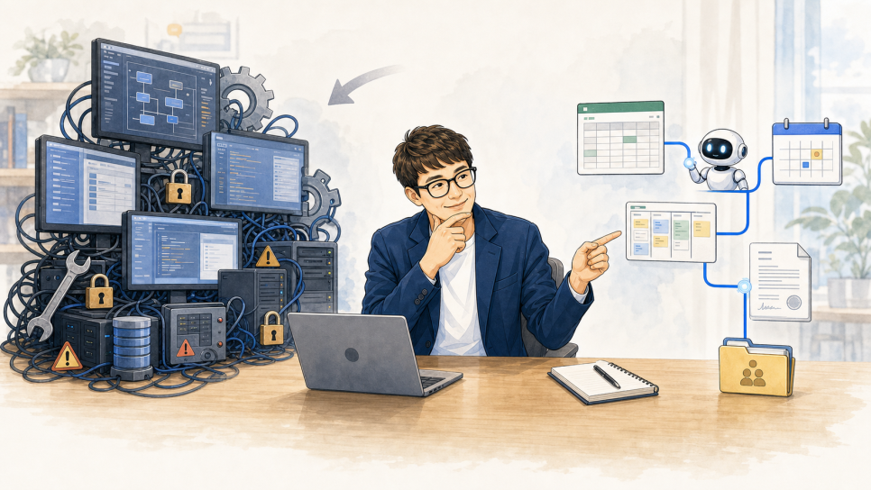
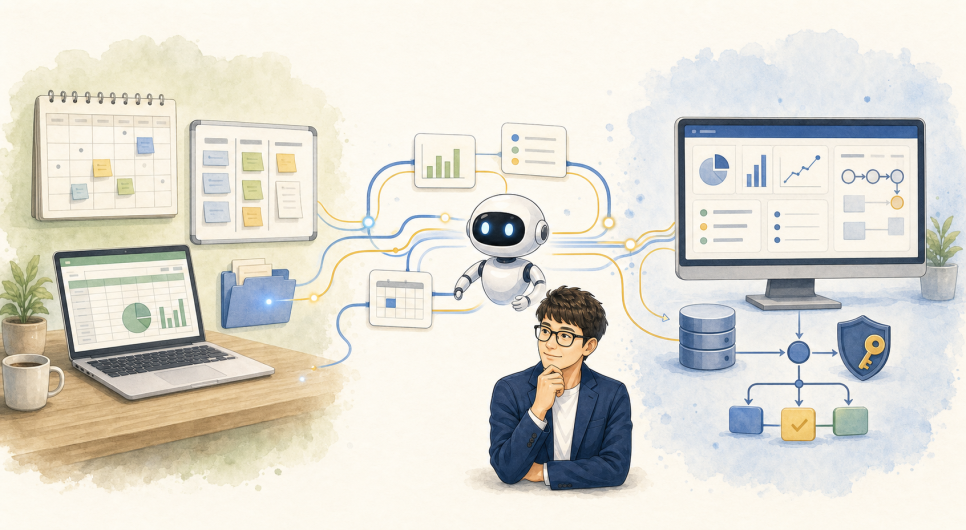

ALEXSOFT INSIGHTS
업무자동화, 꼭 새로운 프로그램을 개발해야 할까?
업무자동화에서는 새 프로그램부터 만들기보다 기존 도구를 유지하고 필요한 연결과 자동화부터 찾아야 한다는 글.

업무자동화 이야기를 하면 많은 분들이 먼저 새 프로그램을 떠올리고, 특히 소프트웨어 개발사라면 당연히 이것부터 권할거라고 생각합니다.
"엑셀 대신 업무시스템을 만들어야 하지 않을까?"
"여러 사람이 같은 정보를 함께 다루려면 별도 프로그램이 필요하지 않을까?"
"AI를 활용하려면 처음부터 새로 개발해야 하지 않을까?"
물론 그럴 때도 있습니다.
하지만 저는 업무를 자동화할 때 무엇을 새로 만들지보다, 무엇을 그대로 둘 수 있는지를 더 중요하다고 생각합니다.
새 프로그램을 만드는 일은 생각보다 많은 것을 함께 바꿉니다. 기존 데이터를 옮겨야 하고, 사용자는 새로운 화면과 사용법을 익혀야 하고, 권한설정도 고민해야 하고, 기존 업무 프로세스도 바꿔버리는 경우가 많습니다.
무엇보다 업무시스템은 개발비를 한 번 내고 끝나는 물건이 아닙니다.
업무 규칙과 조직이 바뀌면 시스템도 계속 수정해야 합니다. 외부 시스템과의 연계 방식이 바뀌면 대응해야 하고 장애 대응, 보안 업데이트, 백업, 데이터 수정 등 유지 보수에 대한 노력 없이는 금방 애물단지가 되고 맙니다.
별도 업무시스템은 필요한 경우 매우 강력한 해결책입니다. 하지만 도입비뿐 아니라 수년 동안 이어지는 유지관리 비용과 운영 책임까지 감안하면, 가장 비싼 해결책중 하나이기도 합니다.
새 보고 시스템을 만들지 않은 이유
제가 맡았던 한 조직에서는 매주 주간업무 보고서를 작성했습니다. 보고 양식도 한 가지가 아니었지요.
보고서를 작성하는 일 자체도 번거로웠지만, 시간이 더 많이 드는 일은 따로 있었습니다.
일정표를 확인하고, 업무관리 도구의 변경사항을 살펴보고, 회의에서 결정된 내용을 다시 찾아야 했습니다. 여러 곳에 흩어진 내용을 모은 뒤, 이번 주 실적과 다음 주 계획으로 정리해서 정해진 보고 양식에 옮겨야 했습니다.
"차라리 주간보고 전용 시스템을 만드는 게 낫지 않을까?"라는 생각을 할 수도 있었습니다.
하지만 새 보고 시스템을 만든다고 해서 기존 보고 양식이 사라지는 것은 아니죠. 회사의 공식 보고 체계와 결재 과정은 그대로 남고, 조직 개편이나 결재선이 바뀌면 결국 새로운 시스템과 보고 양식에 같은 내용을 두 번 관리하게 될 가능성이 큽니다.
그래서 새 보고 시스템을 만들지 않았습니다.
기존 보고 양식은 공식 기록으로 그대로 두고, 일정표, 업무관리 도구, 회의록에 흩어진 내용을 AI와 연결해 읽고 정리하도록 했습니다. 그리고 정리된 내용을 기존 보고 양식의 맞는 위치에 옮기는 작업을 자동화했습니다.
핵심은 보고 시스템을 대체하는 것이 아니었습니다.
사람이 매주 반복하던 자료 찾기, 내용 및 서식 정리, 복사와 붙여넣기를 줄이는 일이었습니다.
팀이 이미 쓰는 도구 안에서 해결하는 편이 낫다.
비슷한 경험은 오류관리 업무에서도 있었습니다.
새로운 오류관리 프로그램이나 별도 현황판을 만들기보다, 팀이 이미 매일 열어보는 Google Sheet 안에 통계와 필터, 안내 기능을 넣는 방식으로 운영했습니다.
팀이 계속 확인해야 하는 자료가 별도 파일이나 별도 화면에 흩어지면, 결국 최신 정보가 어디에 있는지부터 다시 확인해야 합니다.
업무도구가 하나 늘어날수록 사용법, 권한, 공유, 최신화에 드는 비용도 함께 늘어납니다.
그래서 저는 팀이 이미 사용하는 도구 안에서 해결할 수 있는 문제라면 먼저 그 방법을 찾습니다.
사내 wiki, 업무관리 도구, 기존 시스템과 개발자료, 공유 시트도 마찬가지입니다. 자료를 전부 새로운 시스템으로 옮기기보다, 필요한 정보가 있는 곳에 그대로 두고 그 사이를 연결하는 편이 더 나은 경우가 많습니다.
그대로 쓰기, 연결하기, 필요한 부분만 만들기
저는 업무자동화를 세 단계로 생각합니다.
- 먼저 현재 도구를 그대로 사용해도 되는지 봅니다. 이미 잘 동작하고 있고, 사용하는 사람도 익숙하다면 굳이 바꿀 이유가 없습니다.
- 그다음 사람이 반복해서 옮기고, 확인하고, 복사하는 구간이 있는지 봅니다. 이때는 기존 도구 사이를 연결하거나 간단한 자동화 기능을 더하는 것이 효과적입니다.
- 마지막으로 별도 시스템이 필요한지 판단합니다.
같은 정보를 여러 곳에 중복 입력해야 하거나, 최신 정보가 무엇인지 자주 헷갈리거나, 권한과 변경 이력을 엄격하게 관리해야 하거나, 예외 상황이 너무 많아 기존 도구들로 감당하기 어려워진다면 그때 새로운 시스템을 고려해 볼만 합니다.
특히 그 업무가 회사의 핵심 경쟁력과 직접 연결된다면, 별도 시스템은 마지막 수단이 아니라 처음부터 제대로 투자해야 할 대상입니다.
유지관리 비용이 든다는 이유로 필요한 시스템 도입까지 미루어야 한다는 뜻은 아닙니다. 별도 시스템이 데이터 오류와 반복 업무를 줄이고, 조직의 핵심 업무를 안정적으로 운영하게 한다면 장기적으로 훨씬 많은 비용을 절감하게 될 것입니다.
중요한 것은 새 프로그램을 만들 수 있느냐가 아닙니다.
현재의 문제를 해결하는 데 어느 정도의 시스템화가 필요한지 판단하는 일이 더 중요합니다.
저는 좋은 업무자동화가 기존 도구를 모두 없애는 일이라고 보지 않습니다.
잘 작동하는 부분은 남기고, 사람이 불필요하게 반복하는 구간만 정확히 찾아 줄이는 일. 그것이 더 빠르고, 더 안전하고, 실제 현장에서 오래 쓰일수 있는 자동화이고, 업무 최적화입니다.
그래서 업무를 들으면 바로 새 프로그램 개발과 도입부터 제안하지 않습니다. 현재 사용 중인 엑셀, 공유 문서, 기존 프로그램 화면, 업무 프로세스를 세심하게 먼저 살펴봅니다.
무엇을 새로 만들지보다, 무엇을 남기고 어디를 연결해야 하는지부터 정리하는 것이 더 좋은 출발점이기 때문이다.
